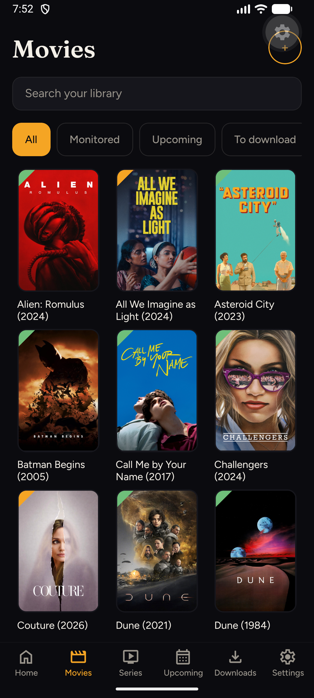
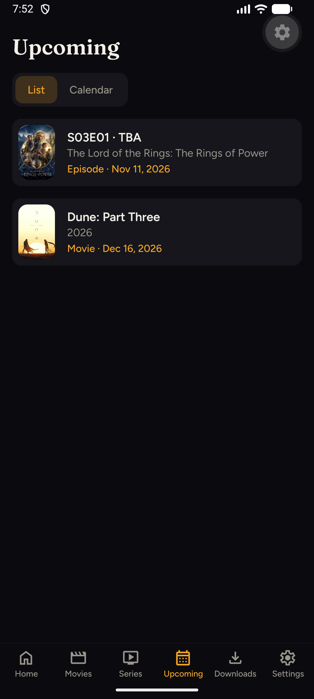
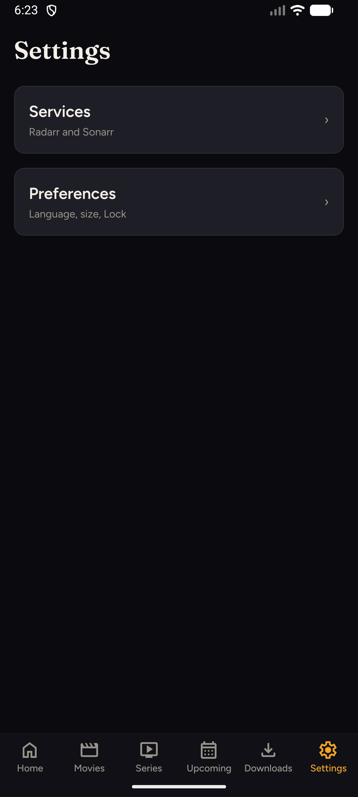

Arrmada
Your Radarr & Sonarr libraries, on your phone — home LAN only.
Browse movies and series, add what you want, follow upcoming releases, and manage downloads — all from your phone at home.
What you get
Day-to-day library control without the Radarr/Sonarr admin UI.
-
Home
Downloads in progress, recent activity, health, Upcoming peek.
-
Movies & Series
Poster grids with search and filters — monitored to downloaded.
-
MediaQuick
Glanceable bottom sheet from a poster; one tap for full detail.
-
Upcoming
Date-sorted list or calendar — same data, two layouts.
-
Downloads
Pause, resume, and cancel active or queued downloads.
-
Notifications
Local alerts when a download starts, lands, or fails.
-
Lock
Optional PIN or biometrics — off by default.
-
Settings
Services (address + key) and Preferences (language, size, Lock).
Inside the app
English UI on Android against live Radarr and Sonarr.



Getting started
Phone and servers on the same home LAN. One Radarr, one Sonarr.
- Requirements Node.js 20+, Android with Expo Go (or a dev build), Wi‑Fi to your *arr hosts.
-
Run
Scan the QR code with Expo Go, or press a for the emulator.npm install npm start - Connect On first launch, enter each service’s LAN URL and read/write API key. Tap Test connection, then Continue. Keys stay in Secure Store on the device.